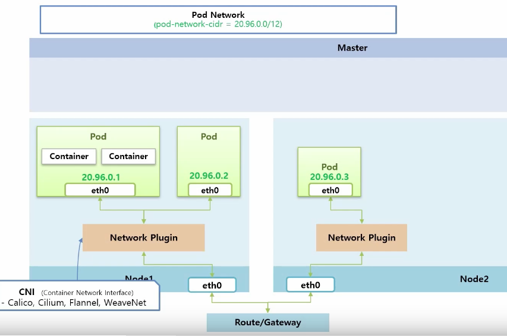
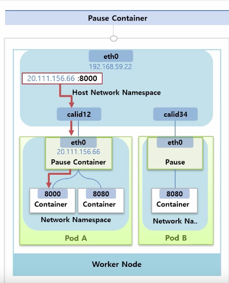
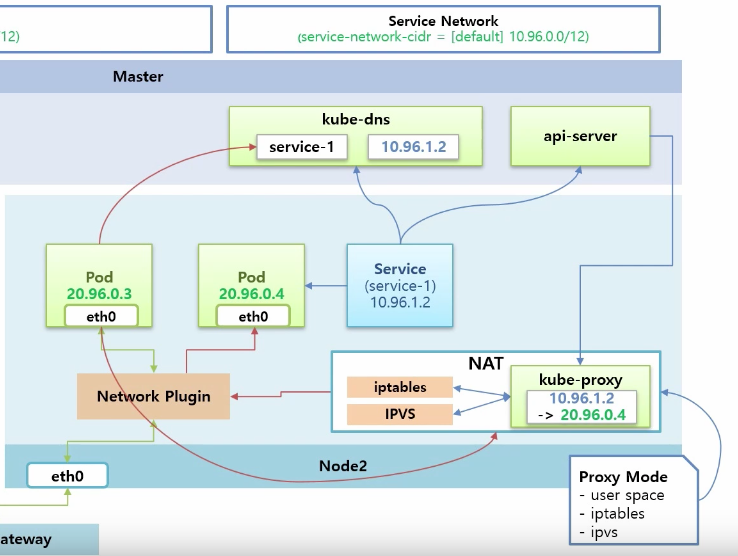
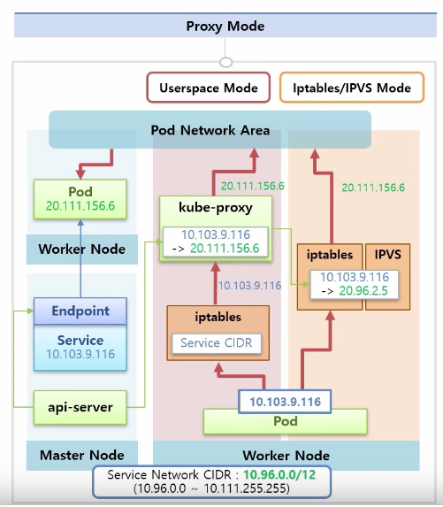

“클러스터 네트워킹 구성 - 쿠버네티스 기본편 (3)”
파드 네트워킹
- 파드 컨테이너 간 통신과 파드 끼리의 통신으로 크게 나눌수 있음
- 쿠버네티스는 파드마다 각각의 IP를 할당받음
- 여러대의 노드를 사용해 클러스터 구성 후 노드별로 실행한 파드들이 IP를 이용해 통신

- pod 생성시 pod network 범위 내에서 고유 ip 를 가지고 있는 인터페이스 생성됨
- pod 에 속한 컨테이너 들은 하나의 인터페이스를 공유
- 같은 파드에 속한 컨테이너들은 모두 IP 하나를 가짐
- 파드에 접근할 때는 파드의 IP 이용, 파드 안 컨테이너 사이의 구분은 포트를 이용
- 두 파드들 간의 통신은 network plugin 담당
pause container

- pod의 네트워크 담당 컨테이너로 pod 생성 시 자동생성 됨
- 리눅스에 네트워크 네임스페이스를 별도로 생성해서 가상의 인터페이스 만들고 관련 컨테이너들에게 공유
- pause 컨테이너 네트워크 네임스페이스를 pod 내 모든 컨테이너들이 공유해서 사용
- puase contrainer 생성 시 host network interface에 가상 인터페이스가 하나 생김
- pause container interface와 연결
- pod 만들 때마다 가상 인터페이스와 1:1 매칭
- 외부에서 pod로 들어오는 트래픽을 받고 특정 컨테이너로 트래픽을 전달하는것이 가능 해짐
- 파드 하나에 여러개 컨테이너 생성 시 컨테이너 각각 할당된 IP 변하지 않음
- 같은 파드 안 컨테이너는 로컬 IP 주소(127.0.0.1)로 서로 통신 가능
네트워크 네임스페이스 만들기 : https://www.joinc.co.kr/w/man/12/NetworkNamespace
pause container 더 알아보기 : https://jordy.kr/the-kubernetes-pause-container/
파드 간 통신
https://jonnung.dev/kubernetes/2020/02/24/kubernetes-pod-networking/
https://ikcoo.tistory.com/11
서비스 네트워킹

- 보통 여러개의 pod를 실행, pod 앞에 service를 두고 사용
- 실제 클러스터 안에서 통신할때는 서비스의 IP를 거침
- pod에 service를 붙이게 되면 고유의 ip 생성
- service 생성과 동시에 kube-dns에 서비스 이름과 ip 등록
- api-server > kube-proxy 서비스의 ip가 어느 pod와 연결되있는지에 대한 정보 전달
- kube-proxy는 worker 노드들마다 pod형태로 띄워져 있음
- service ip를 pod ip로 바꾸는 NAT 기능 필요(proxy mode 세가지 user space, iptables, ipvs)
- pod가 서비스 호출 시 kube-nds를 통해 서비스 ip 얻음
- 서비스 ip 를 NAT 영역으로 호출
- pod 정보들을 가지고 network plugin을 통해 해당 pod로 전달
- 서비스 삭제 시 api-server가 감지 > kube-proxy 설정 삭제 요청
서비스 네트워킹 이해하기 : https://coffeewhale.com/k8s/network/2019/05/11/k8s-network-02/
kube-proxy

- 서비스 생성 시 클러스터 IP나 노드 포트로 접근할수 있게 실제 조작
- endpoint 라는 오브젝트에서 실제 연결상태 담당
- api-server가 endpoint 감시 > kube-proxy server가 pod ip로 포워딩된다는 정보 전달
- 클러스터 노드마다 실행되면서 클러스터 내부 IP로 연결하려는 요청을 적절한 파드로 전달
userspace mode
- iptables 리눅스 워커 노드에 기본 설치
- service cidr로 트래픽 유입 시 kube-proxy 로 전달
- 요청을 파드들에게 나누어줄때 라운드 로빈 사용
- 파드 하나로의 연결 요청 실패 시 자동으로 다른 파드에 연결 재시도
단점
- 모든 트래픽이 kube-proxy 로 유입
- 성능, 안정성 좋지 않아 거의 사용하지 않음
iptables mode
- kube-proxy 가 iptables 에 매핑정보 직접 등록
- iptables에서 직접 pod ip로 변환
- 직접 클라이언트 트래픽을 받지 않음
- 쿠버네티스 기본 모드
- userspace mode 보다 성능, 안정성 뛰어남
- iptables에 업데이트 하는 규칙이 수천개 단위라면 성능 이슈 발생 할수도 있음
- 연결 요청 실패 시 재시도 처리 없음
IPVS mode
- 리눅스 커널에 있는 L4 로드 밸런싱 기술
- 리눅스 커널 안 네트워크 관련 프레임워크인 넷필터에 포함
- iptables 와 같은 역할 해줌
- 데이터 구조를 해시 테이블로 저장
- 많은 로드밸런싱 알고리즘 존재
- 낮은 부하 상태에서는 비슷하지만 부하 커질수록 성능 좋아짐
프록시 모드 더 알아보기 : https://arisu1000.tistory.com/27839
서비스 프록시 심화 : https://ssup2.github.io/theory_analysis/Kubernetes_Service_Proxy/
쿠버네티스 DNS
- 쿠버네티스는 클러스터 안에서만 사용하는 DNS 설정 가능
- 파드 사이에서 통신할때 IP가 아닌 도메인 사용 가능
- IP로 통신하도록 설정했다면 IP 대역이 다를때 템플릿에서 해당 IP 대역을 사용하도록 수정한후 다른 클러스터에 적용해야 함
- 클러스터나 API 게이트 웨이를 호출할 서비스를 찾는 서비스 디스커버리용도로 사용 가능
- kube-dns > 1.13 부터 CoreDNS가 기본 DNS 로 설정
https://da-nika.tistory.com/191
https://arisu1000.tistory.com/27859
https://jonnung.dev/kubernetes/2020/05/11/kubernetes-dns-about-coredns/